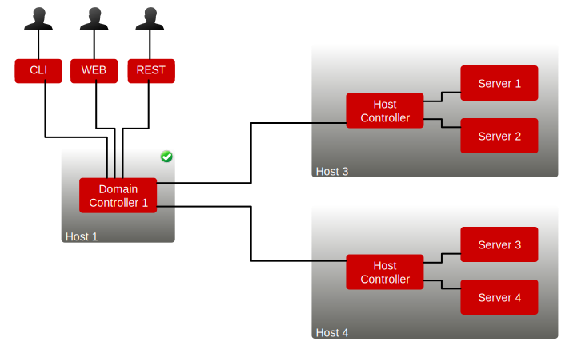

Your browser doesn't support the features required by impress.js, so you are presented with a simplified version of this presentation.
For the best experience please use the latest Chrome, Safari or Firefox browser.
JBoss EAP has two different Deployment modes
StandaloneIn standalone mode everything is started in a single JVM, including management interfaces etc. |
Domain modeIn domain mode management interfaces and console's etc are separated from the JVM process where the JBoss server is running.  |
Domain controllers are used to manage one or more server instances. Domain configuration shouldn't be confused with clustering of servers, which is separate from domain controller. If a domain controller goes down for what ever reason the server will still serve requests. So the domain controller is NOT a Singel Point of Failure (SPOF) for the Applications.
However, until the domain controller is restarted management of servers isn't possible
Use a spacebar or arrow keys to navigate